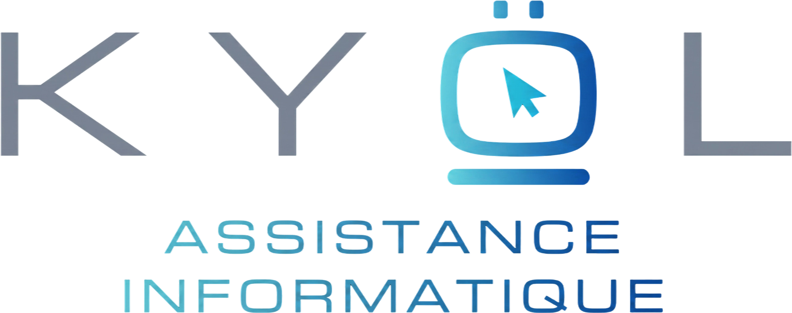

Par téléphone, WhatsApp, e-mail ou formulaire.
+687 85 34 08
Échangez rapidement avec KYÖL IT.
contact@kyol.nc
Retrouvez KYÖL IT sur Facebook.
Nouvelle-Calédonie
Échangeons directement par téléphone ou WhatsApp, ou envoyez une demande de devis détaillée.